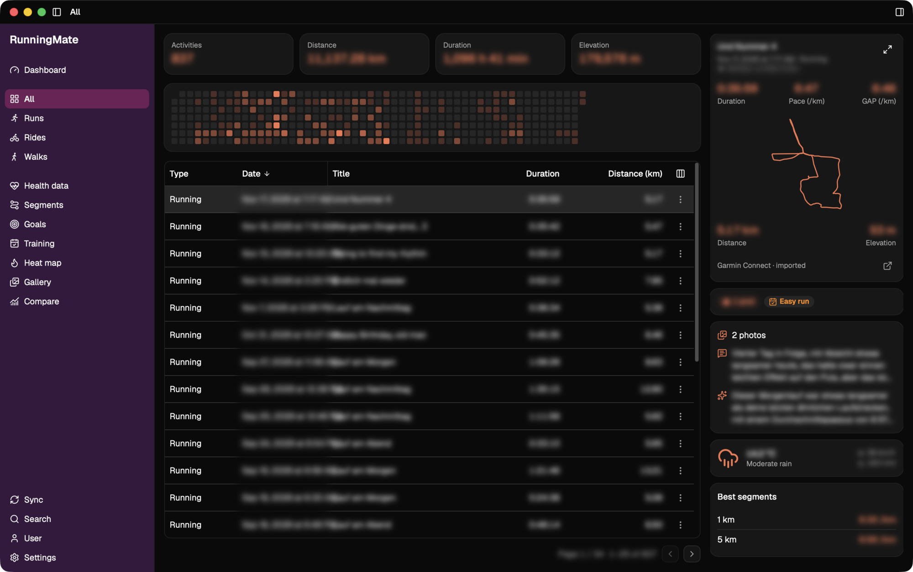
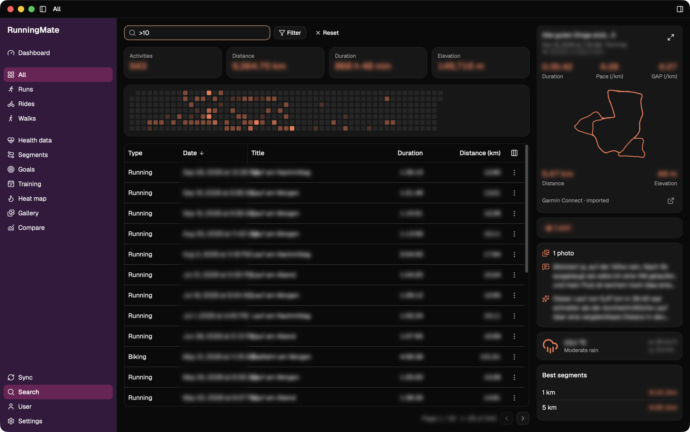

Main Window
The main window has a title bar at the top, the sidebar on the left and the current page beside it. On the activity pages a details panel on the right shows one activity.

Title bar
The title bar shows the name of the current page. The button on the left collapses the sidebar to its icons and opens it again (also ⌘B). On the activity pages, the button on the right (Toggle details panel) shows or hides the details panel; the choice is kept.
Sidebar
The sidebar has three groups of pages. Hover an entry to see its shortcut; the same pages are in the View menu.
| Entry | Shortcut | Page |
|---|---|---|
| Dashboard | ⇧⌘D | The start page, see Dashboard |
| All, Runs, Rides, Walks | The activities of all sports or of one sport (below) | |
| Health data | ⇧⌘H | Fitness, form and heart rate, see Health data |
| Segments | ⇧⌘G | See Segments |
| Goals | ⇧⌘O | See Goals |
| Training | ⇧⌘T | See Training |
| Heat map | ⇧⌘M | See Heat map |
| Gallery | ⇧⌘P | See Gallery |
At the bottom:
- Sync (⌘O) imports activities from files, a folder or Garmin Connect, see Sync.
- Search (⌘F) opens the activities with the search bar, see Search and filters.
- User opens your profile, shoes, bikes and heart-rate zones, see User settings.
- Settings (⌘,) opens the app settings, see Settings.
The app opens on the dashboard.
Activities
All, Runs, Rides and Walks show the activities of that sport. Switching sport keeps a search or filter, but goes back to the first page and to sorting by date.
Info cards and training calendar
At the top, four cards add up the activities shown: Activities, Distance, Duration and Elevation.
Below them is a calendar of the last 52 weeks, one square per day and one column per week (Monday at the top). The more time you trained that day, the stronger the colour, measured against the busiest day in the calendar. Hover a square to see the date and the training time. With a date filter, the calendar ends on the To date (or a year after the From date).
Both follow the sport and any search or filter.
The table
The columns depend on the sport:
- All: Type, Date, Title, Duration, Distance (km).
- Runs: Date, Title, Duration, Distance (km), Elevation (m), Speed (km/h), Pace (/km), HR (bpm), Steps, Pause.
- Rides: as runs, with Power (W) instead of Steps.
- Walks: as runs, without Pause.
The button at the right end of the header row (Columns) adds optional columns: Location, the place the activity started in (see Settings), shown after the title. The choice is kept.
Click a column header to sort by it, and again to reverse the order; an arrow marks the sorted column. The first two columns stay in place when you scroll the table sideways. The table shows 25 activities a page; the arrows below it move between pages.
- Click a row to show the activity in the details panel.
- Double-click a row to open it in the detail window. Previous and next in the detail window follow the order of the table, across pages.
- The ⋮ button at the end of a row opens a menu:
Search and filters

Click Search in the sidebar, choose View → Search or press ⌘F to show the search bar above the activities; the
same again hides it. Type to search: the list updates after a short pause. The search ignores upper and lower case and
looks in the title, the comment and the place the activity started in. With several words, every word has to appear,
each in any of them and in any order: Freiburg morning finds the morning runs from Freiburg. Escape closes the search
bar.
Distances can be typed into the search box too (in km, with . or , for decimals); the other words are still searched
for:
| Type | Finds activities of |
|---|---|
10km or 10 km |
about 10 km (±5 %) |
>21 or >=21 |
at least 21 km |
<5km or <=5 |
at most 5 km |
10-15km |
10 to 15 km |
A number without km or </> (like 2024) is searched for as text. Together with a distance range from Filter,
both apply: <15km with a filter from 5 to 20 km shows 5 to 15 km.
Filter opens a dialog with ranges for Date, Distance (km), Duration (min) and Elevation (m), each with From and To. Leave a field empty to not filter by it. Both ends are included; a To below its From is raised to the From. Apply sets the filter. The active filters show as small labels next to the search box, and Reset clears the search text and all filters.
The info cards, the training calendar and the table all follow the search and the filters.
Details panel
The details panel shows the activity you clicked, or else the latest activity of the sport shown. From top to bottom:
- Overview: title, date and time, the type, the place it started in (once looked up), Duration, Pace (/km), for runs and walks GAP (/km) (the grade-adjusted pace), the route map, Distance and Elevation. The button at the top right opens the detail window. Hover the route to get a button that saves it as an image (PNG or SVG, white lines on a transparent background). If the activity came from or went to Garmin Connect, a line says so, with a button that opens it there.
- Goals, sessions and trophies: a star with the number of goals the activity hit, the kind of training session it did, and a trophy with the number of segments where it is in the top 3. Hover them for the details. The box is left out when there is none of them.
- Photos, comment and summary: the number of photos and the start of the comment and the AI summary. Click it to open the detail window, where they are in full.
- Weather: the conditions, the average temperature, the strongest wind and the rain.
- Best segments: the fastest pace over set distances within the activity (1, 5, 10, 21 and 42 km for runs; 5 to 200 km for rides; 1 to 50 km for walks).
Which boxes are shown can be chosen separately for runs, rides and walks in Settings on the Activity panel page: Route map, Garmin Connect link, Goals, sessions and trophies, Photos, comment and summary, Weather and Best segments. The same choice applies to the overview in the detail window (except photos, comment and summary, which only show in the details panel). Other activity types show every box.
Deleting
Choose Delete… in a row's ⋮ menu and confirm. The activity is removed with everything that belongs to it: its archived file (and the original kept by a fix), splits, weather, best performances, segment passes, heat-map track, AI summary and Garmin link, and the photos and videos copied into RunningMate. Linked photos and videos stay where they are; only the link to them is removed. Goals and the distance of its shoe or bike are updated, and a training session it was linked to stays in the plan, unlinked. Segments drawn on the activity are kept. Deleting can't be undone.